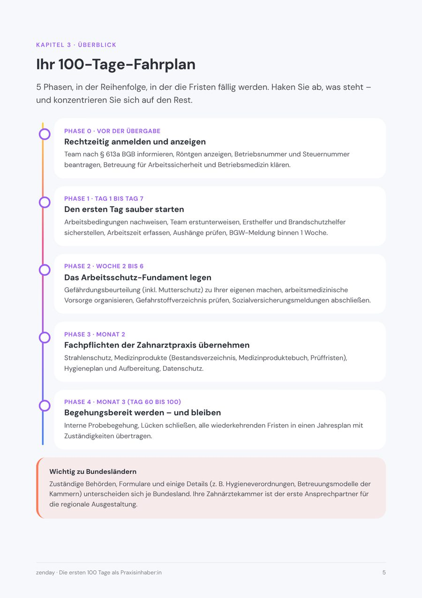
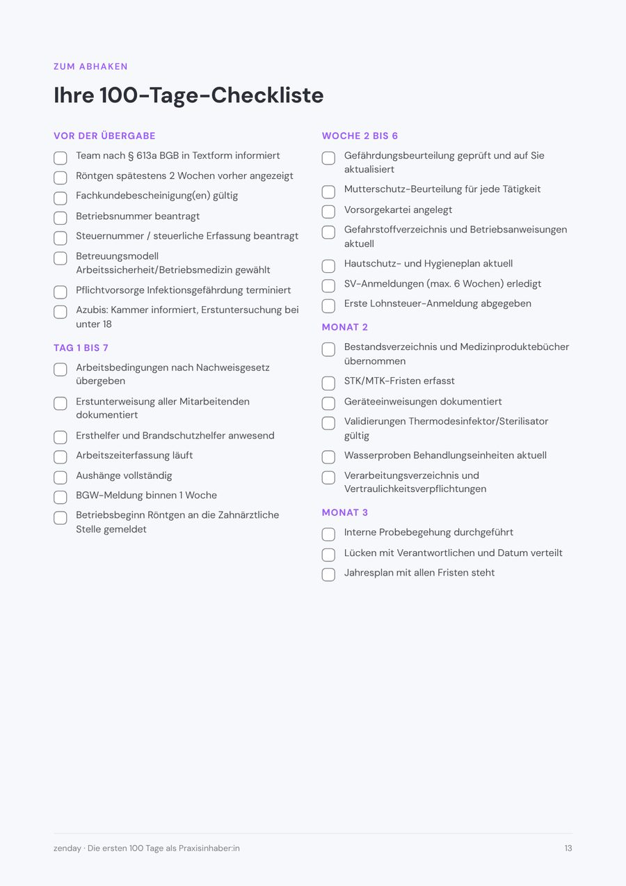

Ihre ersten 100 Tage als Praxisinhaber:in – Schritt für Schritt geplant
Welche Arbeitgeberpflichten ab Tag 1 gelten, was bis Woche 6 stehen muss – und wie Sie die erste Begehung gelassen angehen. 16 Seiten mit Checkliste und den neuen IDZ-Daten 2026.

Fahrplan kostenlos erhalten
Tragen Sie sich ein – der Download startet direkt auf der nächsten Seite.
Sie haben eine Praxis gekauft. Und ein Team gleich mit.
Praxis übernommen
Sie haben in den letzten 12 Monaten eine Praxis übernommen – mit einem Team, das Sie nicht selbst aufgebaut haben.
Neu gegründet
Sie gründen neu und wollen wissen, was vor dem ersten Tag stehen muss.
Begehung im Kopf
Sie fragen sich, wann die erste Begehung kommt – und ob die Unterlagen Ihres Vorgängers reichen.
Wenn Sie sich wiedererkennen: Das E-Book ordnet alle Pflichten nach Fristen – damit Sie wissen, was als Nächstes dran ist.
Die Pflichten sind nicht das Problem. Das Nachhalten ist es.
Jede einzelne Pflicht ist machbar. Schwierig wird es, weil es über 30 Einzelpunkte sind – einmalig, jährlich, alle 2, 3 oder 5 Jahre fällig. Laut Bundeszahnärztekammer verbringen Praxisinhaber:innen im Schnitt 6 Stunden pro Woche mit Bürokratie.
Quelle: zm-online, 29.05.2026
16 Seiten, die Sie durch die ersten 100 Tage führen
- Den 100-Tage-Fahrplan in 5 Phasen – von vor der Übergabe bis Tag 100.
- Die Fristen, die wirklich zählen: Röntgenanzeige 2 Wochen vorher, BGW-Meldung binnen 1 Woche, Sozialversicherung bis 6 Wochen.
- Was sich 2026 geändert hat: neue DGUV Vorschrift 2 – vereinfachte Betreuung bis 20 Beschäftigte.
- Die erste Begehung: wer prüft, was angefordert wird und wo es meist hakt.
- Checkliste mit über 30 Punkten und das Fristen-Jahr zum Abhaken.
- Neue IDZ-Daten 2026: so gründen Zahnärzt:innen heute.


Die erste Begehung hat keinen festen Termin
Quelle: Landtag BW, Drucksache 17/9318
Jederzeit möglich
Bei einer Übernahme übernehmen Sie faktisch den Begehungszyklus der Praxis. Die nächste Begehung kann also jederzeit kommen.
Neue Regeln 2026
Die neue DGUV Vorschrift 2 gilt seit 01.06.2026. Für bestehende Betreuungsverträge läuft die Übergangsfrist bis 31.05.2027.
Seit Einführung der Smart Fields sind neue Praxen nach 3 Wochen begehungsbereit.
Praxisdaten wie Praxisname, Verantwortliche und Geräte tragen Sie 1× ein – zenday füllt sie in alle QM-Dokumente ein. Über 25 Begehungen haben wir mit Praxen begleitet.
Tilmann Förster, Gründer von zenday
Ich bin Tilmann Förster, Gründer von zenday. Über 200 Praxisstandorte und mehr als 2.000 Nutzer:innen arbeiten bereits mit zenday. In diesem E-Book haben wir zusammengetragen, was Gründer:innen in den ersten 100 Tagen wissen müssen – mit Quellen, nach Fristen sortiert.
Häufige Fragen
Kostet das E-Book etwas?
Nein. Sie erhalten das PDF direkt nach dem Absenden auf der nächsten Seite.
Ist das eine Rechtsberatung?
Nein. Das E-Book gibt einen Überblick nach Recherche-Stand November 2026 – mit Quellen. Einige Regelungen unterscheiden sich je Bundesland. Für Ihren Einzelfall sind Zahnärztekammer, KZV, Steuerberatung und ggf. eine Kanzlei die richtigen Ansprechpartner.
Warum fragen Sie nach meiner Telefonnummer?
Wir melden uns kurz, um offene Fragen zu klären. Wenn Sie kein Gespräch möchten, sagen Sie es einfach – das E-Book behalten Sie natürlich.
Was passiert mit meinen Daten?
Wir nutzen Ihre Angaben, um Ihnen das E-Book bereitzustellen und Sie zu kontaktieren. Praxis-Tipps per E-Mail erhalten Sie nur mit Ihrer Einwilligung. Details in der Datenschutzerklärung.
Passt das zu meiner Praxis?
Ja, wenn Sie eine Zahnarztpraxis übernommen oder neu gegründet haben – als Einzelpraxis oder Berufsausübungsgemeinschaft. Auch kurz vor der Übergabe ist der richtige Zeitpunkt.